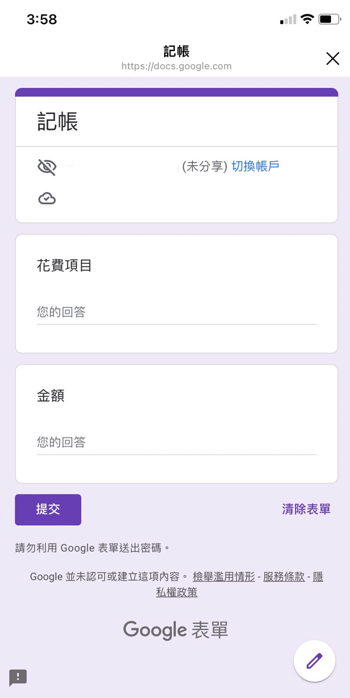

邁向夢想的記帳法
在理財的路上，大家一定都曾經想過要記帳，不管是曾經想過或是曾經執行過，現在沒有持續的原因，多半是因為以下三個原因：
- 記帳太麻煩
- 面對花費有罪惡感
- 對現況沒有什幫助
這篇文章就是要帶大家解決這個問題，也就是如何透過記帳，真正的改變自己的財務現狀。這篇文章適合：
- 想記帳，但是不知如何開始的人
- 曾經記帳，但是失敗的人
現在就利用三個記帳技巧，解決記帳總是失敗的困擾：
找尋適合記帳方式，避免因麻煩而放棄
有些人記帳，一開始會找記帳 app、記帳軟體。app 打開，有很多項目跟欄位，對剛開始記帳的新手，其實並不順手，久而久之就會覺得麻煩，不想用。
解決的方法就是，必須找到適合自己「即時」「方便」記帳的方法。用適合自己的方式先記滿一個月。如果你屬於傳統型，可以準備一枝筆和一本小本子，有消費就隨時記下。
現在手機的筆記本也很方便，主要記錄三個資訊：日期、項目、金額即可。
由於記錄之後，最後還是需要分析消費紀錄，因此也可以使用Google表單，之後打開Google Sheets 即可直接分析 (且日期自動輸入，不須手動)。

改變負面記帳信念，避免自我撻伐
其實記帳是有一點心理壓力的，在記帳的當下，看到一條一條的帳目，如果心中充滿了罪惡感，花錢變得不開心，就不會想要記帳了。
不如換一個信念吧！抱著想要瞭解，每天都很自在開心的花費，需要多少錢才夠的想法來記帳好了。
存錢不代表心存匱乏的收斂花費，記帳不代表心存罪惡的自我撻伐。而是在紀錄的同時，接受與寬恕自己的財務現狀，釐清自己真正的需要。
譬如在記帳期間，我反其道而行，提高固定消費次數和預算。舉例，平常午餐預算只有80元，記帳期間想吃啥就吃啥，偶而幾餐還特意的吃的比平常更好。
本來一個禮拜喝兩三次星巴克，搭配2次路易莎，記帳期間反而只去星巴克。這樣的改變心情當然是更開心。
另外我移除了消費的限制，想坐計程車的時候就坐計程車，想吹冷氣的時候就吹到飽。
最後就是新增更多讓自己開心的花費，比如做SPA，買衣服。
這樣記帳，反而能紀錄開心狀態下所需的花費，再設定為此而努力的賺錢目標。若是因記帳而累積更多的負能量跟自我譴責，記帳不會成功。
對準財務目標，分析消費現況
記帳不外乎是為了瞭解花費狀況，達到改變財務現狀。因此我們的消費狀況，要針對財務目標來調整。但具體如何執行？
首先將所有資料輸入Excel (一個月或甚至三個月做一次就可以)，原本的日期、金額、項目3個欄位，再新增2個欄位，標示固定花費/可調整花費，以及標示類別 (如食衣住行育樂，或是以六個罐子的分類為標示)。總共5個欄位來分析就很足夠。
舉例，想每個月多存3000元，就可以先檢視「可調整花費」欄位，看是否有取代方案 (不一定要完全捨棄這項花費)，如每周搭10次計程車，改成每周5次，另5次以大眾運輸工具取代。或冷氣吹到飽，改每日定時開冷氣。
但若每一項都是固定花費，無可調整，那就代表，現階段收入無法支付日常所需，需要大幅度的調整生活型態，或想辦法創造更多收入，若這是必須面對的事實，也需提早因應。
記帳要記多久?
記帳最好記滿一年，因為有些為年度花費 (如繳稅)，一年才產生一次。但是我們可以將記帳分三階段，以3個月為一個單位操作。
前三個月屬於紀錄期，開心花費如實記錄即可。第二階段為分析期，開始簡單分析自己前三個月的消費，並有意識地於下三個月調整花費。第三階段則為調整期，接續第二階段，固定及習慣新的消費模式。
由於記帳的目的是為了「瞭解消費行為，達到理財目標」，若有確實紀錄及分析，其實半年之後也不是很需要再記帳。當然可以持續的記滿一年最好，但若等下個理財目標出現，或是生活型態大幅改變時需要調整花費時，再重啟記錄也是可以的。
這樣的記帳方法，其實會有一種好處，就是你會覺得，最開心的體驗大概就是那個樣子。譬如假設你前三個月的最佳消費體驗，紀錄出來是5萬，那麼以5萬為最低標準，往上疊加的都是多的幸福。
意思就是，如果已經賺到每月5萬，在那以上其實都是多的，不會有被錢追著跑的感覺，會讓自己更喜歡現在當下的自己。
總結
透過邁向夢想的記帳法，三個月以及接下來的記錄以及分析，最後調整，這樣才有機會透過記帳，改變財務狀況，跨出理財的下一步 (即投資)。
因為談到投資，一定是手上要有多餘的錢。
而我自己也是透過這個流程，才發現我需要的並沒有我想像的多，也才有信心拿出多餘的錢來投資。
關於邁向夢想的記帳法，之前有拍了一支直播，本來想好好剪輯一番再上傳，但發現YouTuber確實不太好當，好在也只是以分享為目的就不強求影片品質了，有緣人就耐心看完吧！
留言
這裡之後會接上第三方留言服務（如 Disqus / utterances / Giscus）。
讀者可以留言、回覆，資料由留言服務代管。